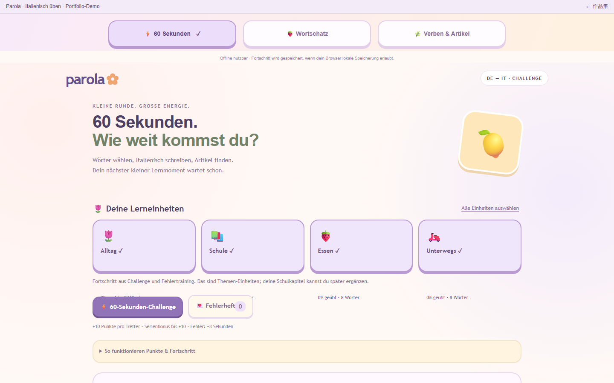

住在德語區、學義大利文，想要一個每天五分鐘就能用的東西
市面上的 App 要登入、要訂閱、要連網，而我要的只是：打開就練、練完知道哪裡弱、下次先練弱的。所以這是一個單一 HTML 檔，放在桌面雙擊就開，手機瀏覽器也能用。
我自己學義大利文用的練習器，介面是德文。一個檔案三個分頁：60 秒挑戰計分、答錯自動進錯題本、每個字分「意思」與「冠詞」兩種能力各自算掌握度；另有單字與動詞冠詞兩個沒有時間壓力的自由練習。可以產生挑戰碼讓朋友玩同一組題，比較結果並存成分享卡。離線可用，進度存在瀏覽器。

市面上的 App 要登入、要訂閱、要連網，而我要的只是：打開就練、練完知道哪裡弱、下次先練弱的。所以這是一個單一 HTML 檔，放在桌面雙擊就開，手機瀏覽器也能用。
義大利文初學者最常錯的不是字義，是 il／la／lo／l’。一般單字 App 把一個字當一個項目計分，冠詞錯了也算「會了一半」。這個工具把每個字拆成兩種能力各自追蹤，名詞的冠詞是獨立題目、獨立掌握度。
時間壓力會讓「會但要想很久」的字浮出來，這些才是該練的。答錯扣秒數比扣分更有感，但不會讓一題失誤毀掉整回合；連勝從第二題起每題多 2 分、最多多 10 分，鼓勵穩定而不是搶快。
手動收藏錯題的 App 最後都沒人收藏。答錯就進錯題本，要在同一能力連續答對兩次才移除，避免「看過一次就以為會了」。錯題訓練沒有時間限制。
這很嚴格，但對自己誠實：掌握度是「現在穩不穩」，不是「歷史上對過幾次」。頁面上直接寫「這是練習值，不是測驗成績」，沒練過的字也算進去，數字不會好看得不真實。
把回合編成一段碼或連結，朋友貼上去就拿到一模一樣的題目與順序，結果才有可比性。碼裡只有可選的暱稱和分數，沒有個資；分享卡用 Canvas 畫成 PNG。
單字與動詞冠詞是沒有壓力的練習場，可以慢慢試；它們的結果不影響挑戰的掌握度，頁面上有寫明。切換分頁會結束進行中的挑戰回合，避免切出去查答案。
沒有框架、沒有外部函式庫。進度存在瀏覽器兩個 localStorage 鍵；存不了時畫面提示「無法儲存」而不是壞掉。字型用 Google Fonts，離線時退回系統字型。作品集版本只加了頂部導覽列，內容與程式一行沒改。
32 個單字、12 個動詞，是我自己當下在學的範圍，不是完整課程。義大利文內容是我整理的，沒有母語者審校。單機、單人，沒有帳號與同步，清瀏覽資料就歸零。文法頁兩個外部連結指向 Treccani 百科，離線時打不開。